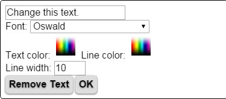

Design your own T-shirt
How to design a custom T-shirt
Designing for all over printing
Designing an all over printed T-shirt, also called a full print T-shirt, is different because you would want to see the result from all sides before you buy it. Therefore we developed our 3D T-shirt designer. Our software maps your design to the 2D T-shirt pattern accurately, also taking care of seams and hems. We first print the pattern on fabric and then cut and sew, so that the 3D online design will be reproduced exactly in reality.
Using our 3D online T-shirt designer
Using the 3D online designer is easy. The best way to start designing is actually to click one of the models above. That will start the designer. Then follow the steps and click next (on top of the page) until you are ready. Later you may check this tutorial to see if you are using all the features that you would like to use.
Versions of the designer
For the more technical readers. The designer has 3 versions: a Webgl version a Flash version and a JavaScript version. This tutorial describes the Webgl version. Webgl is the future for 3D on the web and is supported by a growing number of browsers. If your browser does not support Webgl, you will see the Flash version of the designer. If Flash is not installed in your browser, the JavaScript version of the designer will be used. The Flash and JavaScript versions are very similar to the Webgl version.
New developments and call for ideas
A recent development is that you can add multiple texts on top of the images. We will add Instagram type filters soon. Also we love to hear about your ideas! Let us know about it because we give priority to ideas from actual users.
Selecting images for your T-shirt design
Images for your customized all over printed T-shirt design
With all over T-shirt printing, you can use large images to cover the entire front and back of the T-shirt. You can use different images for the front and the back. Because we first print on fabric and then cut and sew, the images will also be printed correctly on the seams and under the armpits.
Taking photo's
One way to get images is to use the camera of your device. In that way you make T-shirt designs directly with your mobile or tablet. Our website and online designer work on any device. If you start the designer (by selecting one of the T-shirt models above) and click on it, you will see the option to use the camera of your device (if it has one).
Using your own images
You can also use images that you have stored. This option is also automatically presented. These can be photo's or digital artwork that you prepared in e.g. Photoshop, Illustrator, GIMP or any other image editor. Some of the nicest T-shirt designs have been made by applying special effects in the image editor and then saving the results to use the T-shirt designer.
Finding images on the web
The third possibility is to search for images on the web. It is important that the images you use are free of intellectual property (ip) rights. A good way to find these images is to visit sites that have public domain images. Just Google: 'public domain images'. You can safely download and use these on your full print T-shirt designs. Or enhance them first with an image editor.
Image size and type
The best printing results are achieved with images of at least 1000x1000 pixels or more if you decide to enlarge the image. You will get a warning automatically if the resolution is lower. The file size of the image cannot be larger than 20MB. If you need to use larger files, let us know and we will find a way. The file type has to be jpeg, png or gif.
Positioning and scaling the images in the T-shirt designer
Using the design controls
Positioning
Positioning of an image is done by simply dragging it with the mouse or your finger (on touch screens). Note that when you start dragging next to the T-shirt model, you will rotate the T-shirt.
Scaling
Use these controls to shrink or expand the image you are working on. If you expand the image too much, the app will ask you to make it smaller.
Flipping
Flipping (mirroring)an image has an interesting application if the front and back images are the same. By flipping e.g. only the back, it fits seamless to the front, which makes a great design.
Centering
You can move the image back to its initial central position by applying the center horizontal and center vertical controls.
Rotating
Initially the images have an upright orientation. If the image is a photo, the exif orientation of the photo will be applied. You can rotate the image with steps of 90 degrees using the rotate controls.
Designing background colors and collar of the T-shirt
Background colors
We print all T-shirts on white cotton. If your images do not completely cover the front or back side, you can change the color of the white background. This hold also for the color of the collar, which is white by default but can have any color you choose. Note that because we print on white cotton, the black will not be as black as it would be if the fabric itself would have been black!
Changing a background color
If the white background is visible (because you shrunk
the image) or if you are designing the collar, you can change the color
with the color control. Alternatively you can click on any white background,
which will start the color picker as well. Then pick the color
from the color palette or from any spot on your T-shirt
design. In that way you can match the color to that of the image.
More technical users can fill in the hexadecimal color
codes such as #000000 for black or #ffffff for white.
Adding texts to your T-shirt creation
Adding texts
T You can add texts by using the text control (T) in the design panel. The text will be initially: 'Change this text.'. Then click on the text so that the text panel opens. There you can change the text, its color, font and size. You can add multiple texts to each image.
Using the design controls for texts
 In the text panel replace the initial text ('Change this text.') by your own text. The new text will be visible on the T-shirt design as you type. In the text panel you can also change the font, the text color, the line color (contour around the text) and the line width.
Moving, rotating and scaling texts
Move the text in the same way as with the images by dragging it with the mouse or your finger. Also the controls in the T-shirt design panel work in the same way for texts, so that you can rotate and scale them in the same way as with images.
Removing texts
Remove a text by clicking on it so that the text panel opens and press: 'Remove Text'.
Checking your T-shirt creation
Check your design before you upload
By applying the mouse or your finger on the area next to the T-shirt model you can view it from all angles. In that way you can check if there are any unintended white areas and use a background color or move or expand the image. Note that it is not (yet) possible to change designs that have been uploaded.
Uploading and buying the T-shirt you made
Uploading to Photo2Fashion
When you are ready with the design and you press next, you can upload it. Before uploading you will be asked if you would like to show the design in Photo2Fashion's design gallery. You can also give your design a title and a category, so that it can be found better. Then press 'upload'. Depending on the image sizes and the speed of your connection, this can take a few seconds to a few minutes. After uploading you will see your 3D animated T-shirt and it is available in your shopping cart.
Saving, finding and removing designs
When you sign in, your design will be saved in your account and you can see it in your shopping cart and in 'manage designs'. You can also search for designs using the search button and (part of) the title you gave it when uploading. Designs can be removed from the 'manage designs' page using the little red cross.
Sharing and embedding a T-shirt design
Sharing on social media
Under the design you will see buttons for sharing it on Facebook, Twitter and Pinterest. This is a great way to let people know about your creation. An image of the design will be automatically added to your social media post. You can also share the designs of others.
Embedding your custom animated 3D T-shirt design
You can even embed the design on your own website by pressing the embed button below the design and copying the code you will see into your web page.